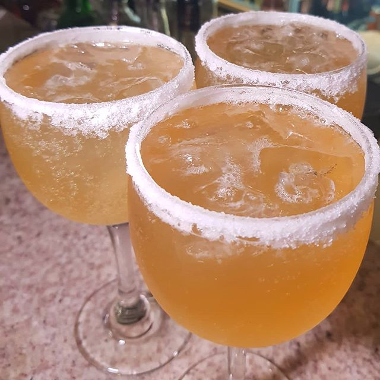
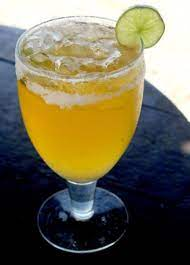
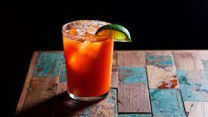

| Cozumel | ||
|  | ||
| Ingredientes | 2 latas de cerveja clara | |
| 2 limões | ||
| 8 cubos de gelo | ||
| 2 colheres de sopa de sal fino ou grosso | ||
| Modo de preparo | Espalhe o sal em um prato e esfregue metade de um limão em toda a borda de 2 copos com boca larga. Vire os copos sobre o sal no prato, pressionando firmemente para grudar o sal na borda. Esprema o restante do limões nos copos, sendo que cada copo deverá conter o suco de meia fruta. Coloque 4 pedras de gelo em cada copo e, por último, adicione a cerveja sem tocar nas bordas do copo, para não dissolver o sal. | |
| Caipirinha de cerveja | ||
|  | ||
| Ingredientes | 1/3 do copo de suco de limão | |
| 1/3 do copo de vodka | ||
| 4 colheres (sopa) de açúcar | ||
| 1 lata de cerveja | ||
| 1 pitada de sal | ||
| Gelo a gosto | ||
| Modo de preparo | Coloque o suco do limão, a vodka, o açúcar e os cubos de gelo em uma coqueteleira
e bata bastante para que a mistura fique bem cremosa. Escolha um copo largo, umedeça a borda com limão e polvilhe com sal. Despeje nesse copo a mistura da coqueteleira e complete com um pouco da cerveja bem gelada. Complete com o restante cerveja enquanto bebe o drink. |
|
| Michelada | ||
|  | ||
| Ingredientes | 1 lata de cerveja (lager) | |
| Molho de pimenta (Tabasco) | ||
| Molho inglês ou shoyu | ||
| 30 ml de suco de limão Taiti | ||
| Sal (se tiver, pode usar pimenta em pó também) | ||
| 4 Cubos de gelo | ||
| Modo de preparo | Cubra a borda de um copo alto com limão taiti, espalhe sal por cima,
e pingue 4 gotas de molho inglês e de tabasco dentro do copo.
Adicione o gelo e o suco de limão por cima. Finalize completando com a cerveja. |
|